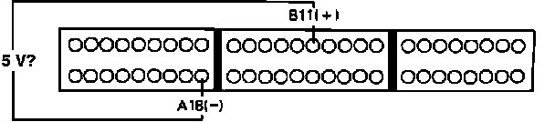

DTC 17
Code 17 indicates a problem in the vehicle speed sensor circuit. Cruise control uses vehicle speed sensor input and is part of the system. Test drive vehicle prior testing, if cruise control does not function properly, repair cruise control system first.1. With ignition off, install test harness between ECU and harness connector. If test harness is not available, carefully backprobe wires at ECU connector.
Vehicle Speed Sensor Code 17 Diagnosis:

2. Disconnect connector B from the main harness only.
3. Turn ignition on.
4. Measure voltage between terminals B11 and A18.
5 volts, proceed to next step.
Not 5 volts, replace electronic control unit. End of test.
5. Turn ignition off and reconnect connector B to main harness.
6. Block rear wheels and set parking brake.
7. Jack up front wheels and support with jack stands.
8. Turn ignition on.
9. Connect voltmeter between terminals B11 and A18.
10. Slowly rotate left front wheel while observing voltmeter.
Pulses 0 - 5 volts, proceed to step 12.
No pulse, proceed to next step.
11. Repair open or shorted YEL/RED wire between ECU terminal B16 and speed sensor in instrument cluster. End of test.
12. Stop wheel and observe voltmeter.
Fixed 5 volts, proceed to next step.
0 volts, proceed to step 14.
13. Check for open YEL/RED wire between speed sensor and ECU terminal B11. If wire checks OK replace vehicle speed sensor. End of test.
14. Disconnect test harness from main harness. Leave connected to ECU.
Vehicle Speed Sensor Code 17 Diagnosis:
15. Measure voltage between terminals B11 and A18.
5 volts, proceed to next step.
Not 5 volts, proceed to step 17.
16. Check for open YEL/RED wire between speed sensor and ECU terminal B11. If wire checks OK replace vehicle speed sensor. End of test.
17. Replace electronic control unit. End of test.